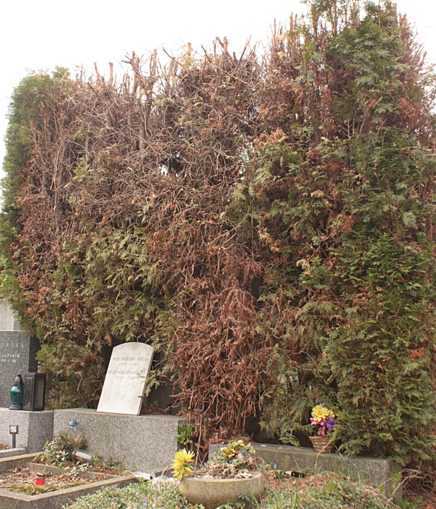

Болезни
Фузариоз (трахеомикозное увядание)
Самая опасная болезнь туй. Грибковое заболевание, которое поражает сосудистую систему растения и приводит к его постепенному увяданию и гибели. Возбудители — грибы рода Fusarium: живут в почве и могут сохраняться там годами.
Как распознать болезнь (часто развивается незаметно, первые признаки легко пропустить):
- Пожелтение хвои — обычно начинается с кончиков отдельных побегов, постепенно охватывая всю крону.
- Со временем хвоя становится красновато-бурой и начинает осыпаться.
- При подкопке больного растения видно, что корни потемнели, стали рыхлыми или начали гнить.
- На поперечном срезе поражённого побега часто видно потемневшее кольцо — это закупоренные сосуды.

Так выглядит поражённая туя. Фото: I.Sáček senior, Wikimedia Commons (CC0)
Почему возникает фузариоз:
- Застой воды в почве: тяжёлый грунт, посадка в низине, высокий уровень грунтовых вод или плохой дренаж.
- Загущённые посадки — плохая вентиляция способствует распространению грибка.
- Заражённый посадочный материал — покупка саженцев в сомнительных местах без проверки корневой системы.
- Повреждения корней при пересадке или других работах.
- Перекорм свежей органикой, например свежим навозом.
- Ослабленные растения — туи, которые плохо перезимовали или подверглись другим стрессам.
Активнее всего споры гриба распространяются в дождливое и тёплое лето.
Что делать: действовать оперативно — чем раньше начато лечение, тем выше шансы спасти растение. Обрежьте все засохшие ветви до здоровой древесины, обязательно дезинфицируя инструменты (раствором спирта или концентрированного фунгицида) при переходе от одного растения к другому.
Важный нюанс: если туя поражена более чем на 50%, её лучше выкопать и сжечь вместе с комом земли, чтобы не заразить соседние растения.
Профилактика (гораздо проще предотвратить болезнь, чем бороться с ней):
- Выбирайте для посадки хорошо освещённые, не подверженные затоплению участки с рыхлой, дренированной почвой.
- Соблюдайте рекомендованное расстояние между растениями, не допуская загущения.
- При покупке саженцев внимательно осматривайте корни.
- Не используйте свежий навоз в качестве удобрения.
- Поливайте умеренно, не допуская застоя влаги.
- В дождливое лето для профилактики можно обрабатывать посадки — например, препаратом «Миковальд-К»: ссылка на препарат на Озоне.
Помните: фузариоз — коварное заболевание, и даже при своевременном лечении нет 100% гарантии полного излечения, так как грибок поражает сосуды изнутри. Поэтому главное — профилактика и внимательное наблюдение за состоянием растений.
Фитофтора (корневая гниль)
Признаки: хвоя буреет и осыпается, начиная снизу, растение угнетено, верхушки побегов увядают.
Что делать: удалить и сжечь сильно поражённые растения, улучшить дренаж, обработать фунгицидом от фитофторы (по инструкции препарата).
Бурое шютте (фомоз)
Признаки: весной побеги желтеют и буреют, на хвое появляются тёмные точки, ветви отмирают.
Что делать: вырезать поражённые ветви до здоровой древесины, обработать медьсодержащим препаратом (например, бордоской жидкостью) весной и при необходимости повторить.
Пожелтение и высыхание хвои
Признаки: хвоя желтеет или сохнет без следов гнили — часто это не болезнь, а недостаток полива, солнечный ожог или неподходящая почва.
Что делать: наладить полив, замульчировать, весной защитить от яркого солнца. Обычно растение восстанавливается само.